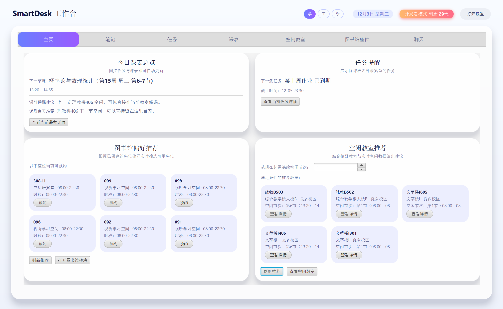
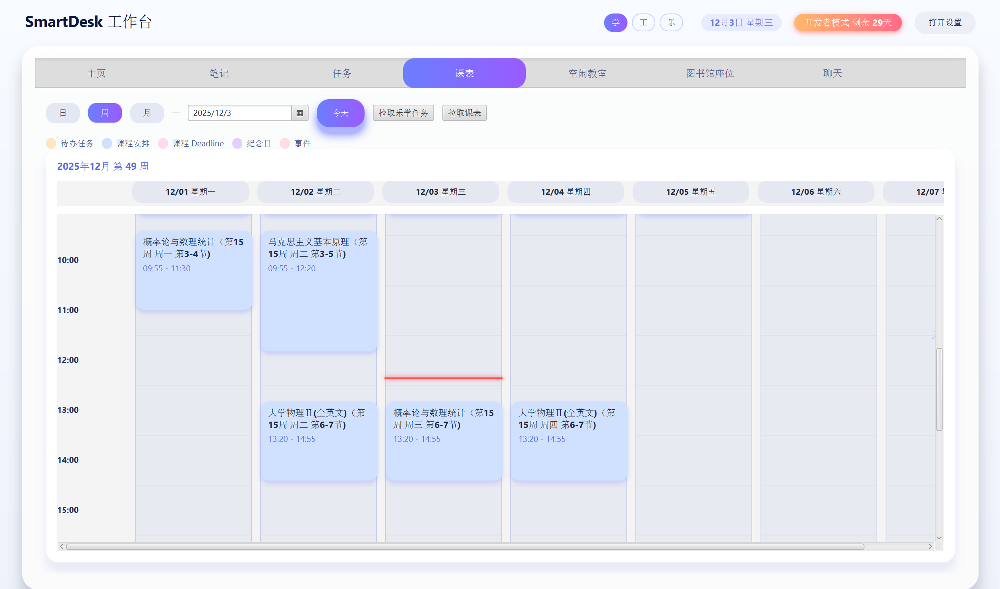
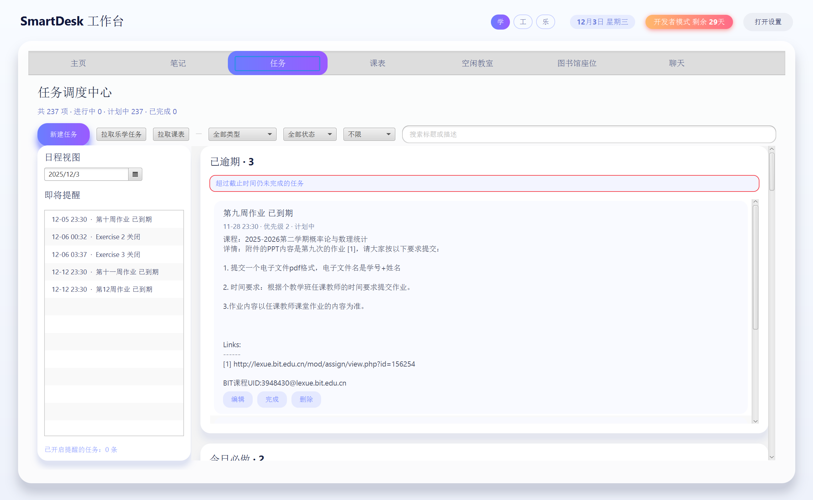
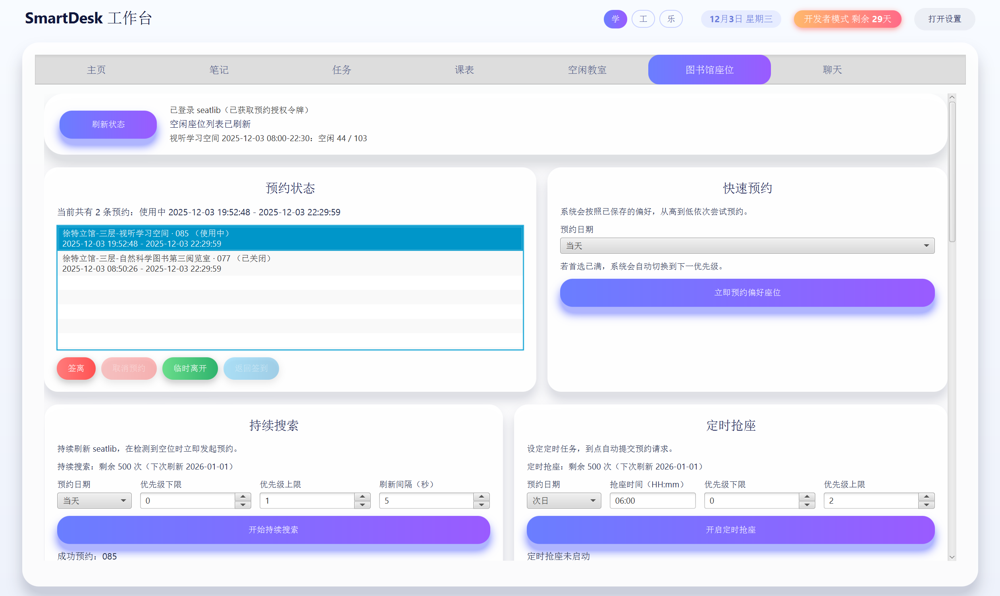
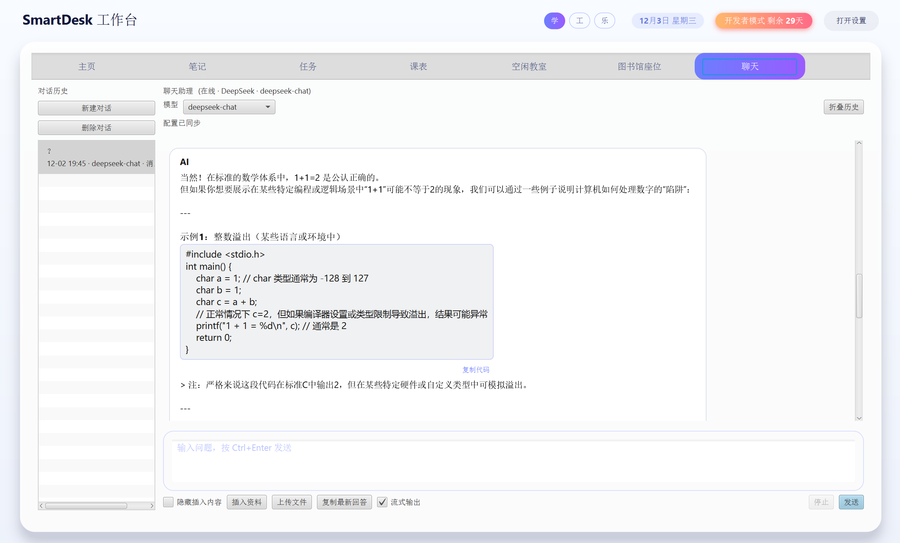
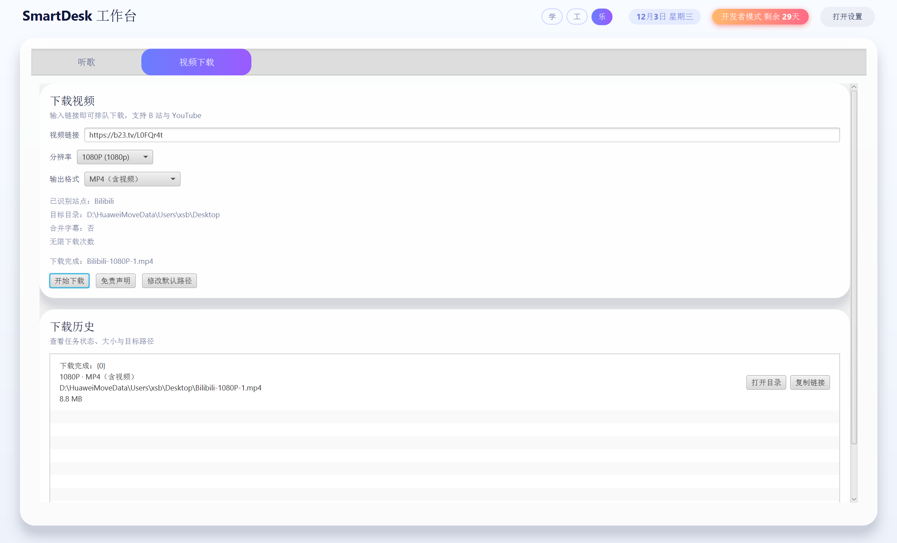
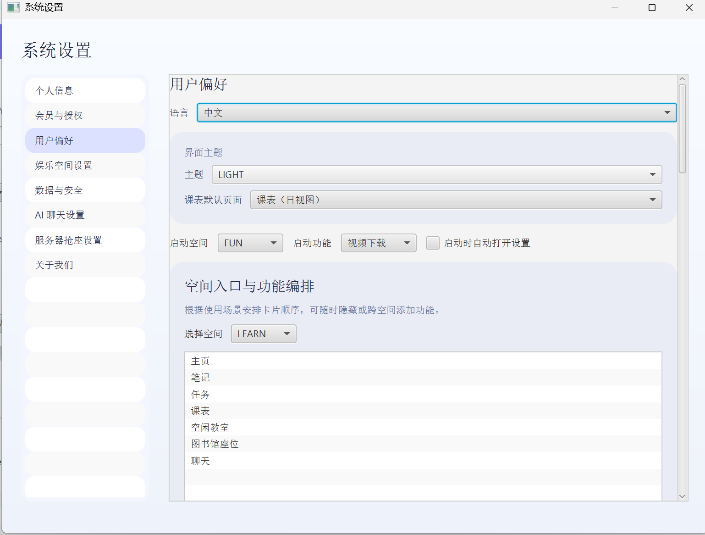

SmartDesk 用“学（Learn）”、“工（Work）”、“乐（Fun）”三个标签，把常用功能按场景分组。 你看到的还是同一套界面和卡片布局，只是换一批卡片，不会再多出一堆复杂菜单。
把主页、课表任务、笔记、空教室、图书馆座位和聊天助手放在一起，打开电脑就是学习主场。
工作空间正在开发中，未来会集中处理文档、PPT 和小工具，让写报告、做课设更顺手。
学累了可以换到娱乐空间，轻松管理 B 站、YouTube 视频下载，主界面依然保持干净简洁。
设置页支持把任意空间的任意功能设为启动页，隐藏不想用的卡片，在设置中调整卡片顺序， 也可以让同一张卡片出现在多个空间（例如视频下载卡片同时出现在学习与娱乐）。
图书馆助手和学习工具共用同一套界面和本地数据存储。默认离线可用，只有在访问学校接口或你授权的 AI 服务时才联网，学习节奏不被打扰。
打开 SmartDesk，先看到的是自己的学习主页：今天的课程、待办和重要提醒一目了然，不用在各个 App 之间来回切换。

在课表视图下快速浏览一周安排，也能顺手查看哪栋楼、哪一层现在比较空，方便临时自习或和同学约讨论。

把作业、实验报告、复习计划写进任务清单，到点前会提醒你，不用再翻聊天记录找 deadline，学习节奏更心里有数。

支持图书馆座位持续搜索、定时抢座和在线预约，帮你提前规划自习时间。抢到座就能安心看书，而不是一直盯着网页刷新。

内置学习向的聊天助手，可以帮你整理笔记、改写答案、解释公式；也可以接入你自己申请的 DeepSeek、OpenAI API key，做更复杂的问答和写作。

支持常见课程视频与公开课下载。Free 每月 3 次、标清画质，Plus/Pro 不限次数、支持高清。使用时请遵守各平台的版权和使用规定。

在设置里可以选择启动页、隐藏不用的模块、调整卡片顺序，也能查看授权信息和当前设备绑定情况，按自己的节奏把 SmartDesk 调整成顺手的样子。

自动化引擎用“授权 + 配额”的方式来管理在线抢座，让系统对所有人都流畅可用，同时又不限制正常学习使用。
每份授权对应一个学号和一台设备，用来防止账号被大量外借。你可以在设置页查看当前绑定设备，需要换电脑时也可以把授权迁移过去。
Free / Plus / Pro 每月分别提供 5 / 150 / 500 次自动搜索和定时抢座配额，Pro 还支持每天最多 10 次在线抢座。 这些上限只是为了防止恶意刷请求，一般同学正常使用基本用不完。
安装后默认是 Free 模式；导入授权文件即可激活 Plus / Pro。授权文件只保留在本地，可以随时禁用或迁移到新设备。
| 能力 | Free | Plus | Pro |
|---|---|---|---|
| Home & 启动页 | 不可用 | 开启 Home | Home + 模块自定义 |
| 持续搜索配额 / 月 | 5 次 · 手动确认 | 150 次 · 手动确认 | 500 次 · 无人值守 |
| 定时抢座配额 / 月 | 5 次 · 需在线守候 | 150 次 · 需在线守候 | 500 次 · 后台线程 |
| 视频下载（B 站 & YouTube） | 每月 3 次 · 标清画质 | 不限次数 · 高清（需遵守版权规定） | 不限次数 · 高清（需遵守版权规定） |
| 在线抢座 | 未开放 | 未开放 | 开放 · 10 次/日 + 授权天数总额 |
| 数据存储 | 所有数据均存储在本地 SmartDesk 目录中，卸载不会删除 | ||